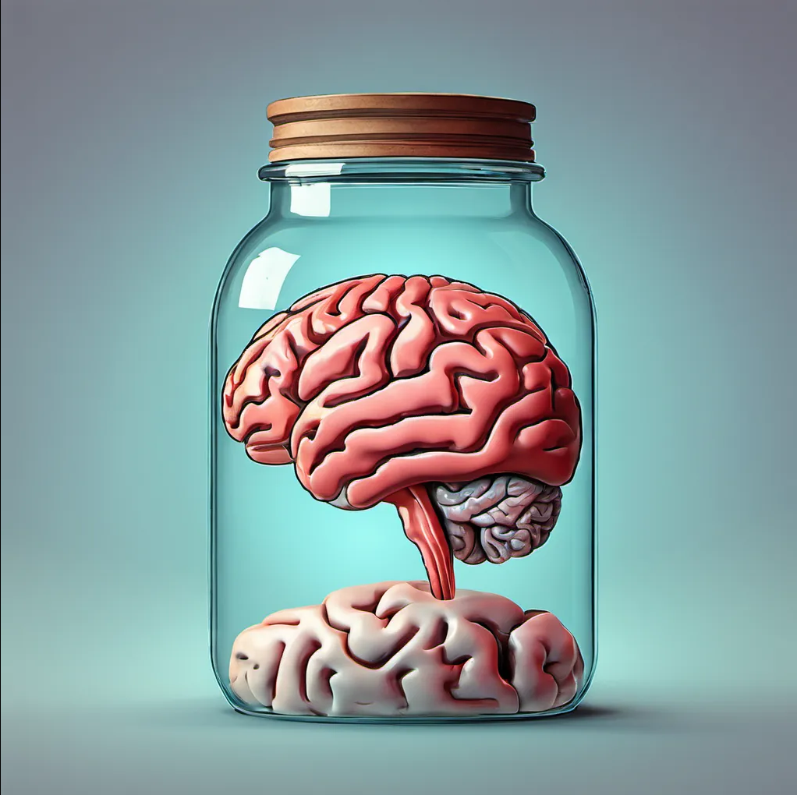
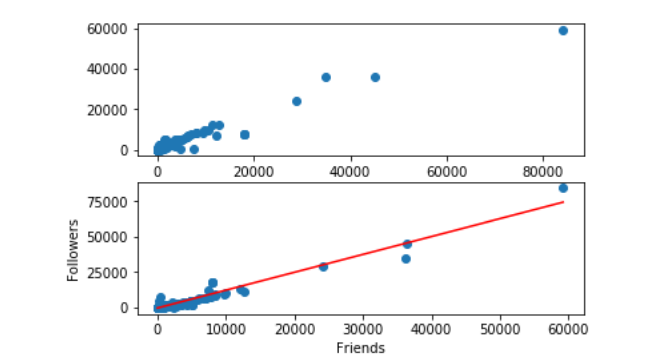
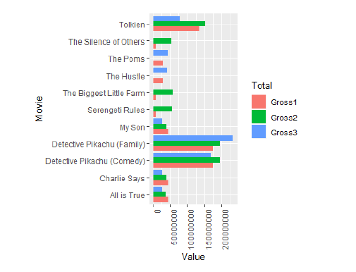

Research Projects

Free Will Dissertation
Doctoral research on free will at the intersection of neuroscience and political philosophy. I examined how cognitive and neural constraints shape responsibility, agency, and moral judgment in political contexts.
Read PDF
2016 Twitter Analysis
Python-based analysis of 2016 Democratic primary candidates’ tweets. I collected and processed tweet data to explore patterns in messaging, tone, and engagement across candidates.
View Report
May 2019 Box Office Predictions
A machine learning project predicting U.S. opening-week box office grosses in May 2019. I used and evaluated Python models to relate features like budget and genre to expected performance.
View Report